{% include JB/setup %}
{% raw %}
<div>

<div class="calibre5"></div><h2 class="chapter" id="ch02">Chapter 2. <a id="ch02__title" class="calibre6"></a>The core rules
      </h2>
      <p class="calibre2"> </p><table cellspacing="5" width="100%" border="1" class="calibre10"><colgroup class="calibre19"><col width="550" class="calibre12"/></colgroup><tbody class="calibre13"><tr class="calibre14"><td class="calibre20"/>
            </tr></tbody></table><div class="calibre4">
         
         <b id="ch02sb01" class="calibre21">In this chapter</b>
         
         <p class="calibre22"></p>
         <ul class="calibre23"><li class="calibre24"><a id="iddle1808" class="calibre25"></a><a id="iddle1825" class="calibre25"></a>Using the Scala Read Eval Print Loop
            </li>
            
            <li class="calibre24">Expression-oriented programming</li>
            
            <li class="calibre24">Immutability</li>
            
            <li class="calibre24">The Option class</li>
            
         </ul></div>
      <table cellspacing="5" width="100%" border="1" class="calibre10"><colgroup class="calibre19"><col width="550" class="calibre12"/></colgroup><tbody class="calibre13"><tr class="calibre14"><td class="calibre20"/>
            </tr></tbody></table><p class="calibre2"> </p><p class="noind">This chapter covers a few topics that every newcomer to Scala needs to know. Not every topic is covered in depth, but we cover
         enough to allow you to explore the subject. You’ll learn about the Read Eval Print Loop and how you can use this to rapidly
         prototype software. Next we’ll learn about expression-oriented programming, and how to look at control flow in a different
         light. From this, we’ll spring into immutability and why it can help to greatly simplify your programs, and help them run
         better concurrently.
      </p>
      
      
      <h3 id="ch02lev1sec1" class="calibre17"><a id="ch02lev1sec1__title" class="calibre6"></a>2.1. Learn to use the Read Eval Print Loop (REPL)
      </h3>
      
      <p class="noind">Scala provides many materials to learn the core language. You can investigate many tutorials, examples, and projects online.
         But the single most important thing Scala provides is a <i class="calibre9">Read Eval Print Loop (REPL)</i>. The REPL is an interactive shell that <a id="iddle1882" class="calibre25"></a><a id="iddle2033" class="calibre25"></a>compiles Scala code and returns results/type immediately. The Scala REPL is instantiated by running <kbd class="calibre18">scala</kbd> on the command line, assuming you have Scala installed on your machine and your path is set correctly. The Scala REPL should
         output something like the following:
      </p>
      
      <pre id="PLd0e2063" class="calibre8">$ scala
Welcome to Scala version 2.8.0.r21454-b20100411185142
  (Java HotSpot(TM) 64-Bit Server VM, Java 1.6.0_15).
Type in expressions to have them evaluated.
Type :help for more information.

scala&gt;</pre>
      
      <p class="noind">From now on, in code examples I’ll use the <kbd class="calibre18">scala&gt;</kbd> prompt to imply that these were entered into the REPL. The following line will be the output. Let’s do a few quick samples
         in the REPL and see what it shows us.
      </p>
      
      <pre id="PLd0e2075" class="calibre8">scala&gt; "Hello"
res0: java.lang.String = Hello

scala&gt; "Hello".filter(_ != 'l')
res1: String = Heo

scala&gt; "Hello".map(_.toInt + 4)
res2: scala.collection.immutable.IndexedSeq[Int] =
  Vector(76, 105, 112, 112, 115)

scala&gt; "Hello".r
res3: scala.util.matching.Regex = Hello</pre>
      
      <p class="noind">You’ll notice that after every statement we enter into the interpreter, it prints a line like <kbd class="calibre18">res0: java.lang.String = Hello</kbd> (see <a href="#ch02fig01" class="calibre7">figure 2.1</a>). The first part of this expression is a variable name for the expression. In the case of these examples, the REPL is defining
         a new variable for the result of each expression (<kbd class="calibre18">res0</kbd> through <kbd class="calibre18">res3</kbd>). The next part of the result expression (after the <kbd class="calibre18">:</kbd>) is the static type of the expression. The first example has a type of <kbd class="calibre18">java.lang.String</kbd>, whereas the last has a type of <kbd class="calibre18">scala.util.matching.Regex</kbd>. The last part of the result expression is the stringified value of the result. This normally comes from calling the <kbd class="calibre18">toString</kbd> method defined on all classes within the JVM.
      </p>
      
      
      
      <h5 class="notetitle" id="ch02fig01">Figure 2.1. <a id="ch02fig01__title" class="calibre25"></a>REPL return values
      </h5>
      
      <p class="center1">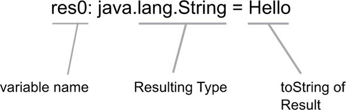</p>
      
      
      <p class="noind">As you can see, the REPL is a powerful way to test the Scala language and its type system. Most build tools also include a
         mechanism to start the REPL with the same classpath as your current working project. This means libraries and compiled classes
         from your project are available within the REPL. You can make API calls and remote server hits inside the REPL. This can be
         a great way to test out a web service or REST API in a quick manner. This leads to what I refer to as <i class="calibre9">experiment-driven development</i>.
      </p>
      
      
      
      <h4 id="ch02lev2sec1" class="calibre28">2.1.1. <a id="ch02lev2sec1__title" class="calibre25"></a>Experiment-driven development
      </h4>
      
      <p class="noind"><a id="iddle1269" class="calibre25"></a><a id="iddle1278" class="calibre25"></a><a id="iddle1301" class="calibre25"></a><a id="iddle1826" class="calibre25"></a><a id="iddle2007" class="calibre25"></a><a id="iddle2017" class="calibre25"></a>Experiment-driven development is where you, the developer, first spend some time experimenting with a live interpreter or
         REPL before writing tests or production code. This gives you time to fully understand the external pieces of software you’re
         interacting with and get a feel for the comings and goings of data within that API. It’s a great way to learn about a new
         web service or RESTful API that has just been published, that latest Apache library, or even learn about something one of
         your coworkers have written. After determining the workings of the API, you can then better write your own code. If you also
         ascribe to test-driven development, this means that you would then write your tests.
      </p>
      <p class="calibre2"> </p><table cellspacing="5" width="100%" border="1" class="calibre10"><colgroup class="calibre19"><col width="550" class="calibre12"/></colgroup><tbody class="calibre13"><tr class="calibre14"><td class="calibre20"/>
            </tr></tbody></table><div class="calibre4">
         
         <b id="ch02sb02" class="calibre21">Rule 1: Experiment in the REPL</b>
         
         <p class="noind">Scala provides the REPL tool so every developer can toy around in the language before committing any final code. It’s by far
            the most useful tool in the Scala ecosystem. Development should start inside the REPL in Scala.
         </p>
         
      </div>
      <table cellspacing="5" width="100%" border="1" class="calibre10"><colgroup class="calibre19"><col width="550" class="calibre12"/></colgroup><tbody class="calibre13"><tr class="calibre14"><td class="calibre20"/>
            </tr></tbody></table><p class="calibre2"> </p><p class="noind">There has been a big push for developers to embrace test-driven development (TDD). This is an approach to development where
         one writes the unit tests first, and then any implementation of those classes. You don’t always know what your API should
         be before you write the tests. Part of TDD is defining the API through the tests. It allows you to see your code in context
         and get a feel for whether it’s something you would want to use. Strongly typed languages can present more issues than dynamic
         languages with TDD because of expressiveness. Using the REPL, experiment-driven development brings this API definition phase
         before test generation, allowing a developer to ensure an API is possible in the type system.
      </p>
      
      <p class="noind">Scala is a strongly typed language with flexible syntax, and as such sometimes requires some finagling with the type system
         to attain the API you desire. Because a lot of developers don’t have strong type theory backgrounds, this often requires more
         experimentation. Experiment-driven development is about experimenting in the REPL with the type system to utilize types as
         effectively as possible in your API. Experiment-driven design is more about adding larger features or domains into your code,
         rather than new methods or bug fixes.
      </p>
      
      <p class="noind">Experiment-driven design can also help drastically when defining domain-specific languages (DSLs). A DSL is a pseudo programming
         language that deals with a particular domain. This language is specific to the domain at hand—for example, querying for data
         from a database. A DSL may be either internal, as seen in many Scala libraries, or external like SQL. In Scala, it is popular
         among library developers to create DSLs covering the same domain as the library. For example, the Scala actors library defines
         a DSL for sending and receiving messages in a thread-safe manner.
      </p>
      
      <p class="noind">One of the challenges when defining a DSL in Scala is to make effective use of the type system. A good type-safe DSL can be
         expressive and easy to read and can catch many programming errors at compiler time rather then runtime. Also having static
         knowledge of types can drastically improve performance. The REPL will let you experiment <a id="iddle1204" class="calibre25"></a><a id="iddle1205" class="calibre25"></a><a id="iddle1281" class="calibre25"></a><a id="iddle1357" class="calibre25"></a><a id="iddle1763" class="calibre25"></a><a id="iddle1793" class="calibre25"></a><a id="iddle1821" class="calibre25"></a><a id="iddle1827" class="calibre25"></a>with how to express a particular domain and make sure that expression will compile. When developing Scala, one finds himself
         adopting the following creative flow:
      </p>
      
      <p class="calibre22"></p>
      <ul class="calibre23"><li class="calibre24">Experiment in the REPL with API design</li>
         
         <li class="calibre24">Copy working API into project files</li>
         
         <li class="calibre24">Develop unit tests against API</li>
         
         <li class="calibre24">Adapt code until unit tests pass</li>
         
      </ul><p class="noind">When used effectively, experiment-driven development can drastically improve the quality of your API. It will also help you
         become more comfortable with Scala syntax as you progress. The biggest issue remaining is that not every possible API in Scala
         is expressible in the REPL. This is because the REPL is interpreted on the fly, and it eagerly parses input.
      </p>
      
      
      
      <h4 id="ch02lev2sec2" class="calibre28">2.1.2. <a id="ch02lev2sec2__title" class="calibre25"></a>Working around eager parsing
      </h4>
      
      <p class="noind">The Scala REPL attempts to parse input as soon as it possibly can. This, and a few other limitations, means that there are
         some things that are hard to impossible to express with the REPL. One important function to express are <i class="calibre9">companion objects and classes</i>.
      </p>
      
      <p class="noind">A companion object and class are a set of object and class definitions that use the same name. This is easy to accomplish
         when compiling files; declare the object and class like so:
      </p>
      
      <pre id="PLd0e2277" class="calibre8">class Foo</pre>
      
      <p class="noind">These statements will also evaluate in the REPL, but they won’t function as companions of each other. To prove this, in the
         following listing let’s do something that a companion object can do, that a regular object can’t: access private variables
         on the class.
      </p>
      
      
      
      <h5 class="notetitle" id="ch02list1">Listing 2.1. <a id="ch02list1__title" class="calibre25"></a>Companion objects in REPL
      </h5>
      
      <p class="center1">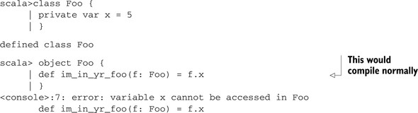</p>
      
      
      <p class="noind">To fix this issue, we need to embed these objects in some other accessible scope within the interpreter. In the following
         listing, let’s place them inside some scope so we can interpret/compile the class and companion object at the same time:
      </p>
      
      
      <p class="noind"></p>
      <h5 class="notetitle" id="ch02list2">Listing 2.2. <a id="ch02list2__title" class="calibre25"></a>Correct companion object in REPL
      </h5>
      <p class="center1">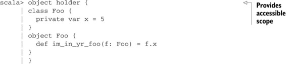</p>
      <p class="center1">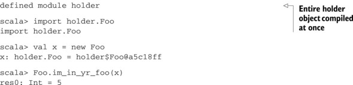</p>
      
      <p class="noind"><a id="iddle1002" class="calibre25"></a><a id="iddle1462" class="calibre25"></a><a id="iddle1522" class="calibre25"></a><a id="iddle1792" class="calibre25"></a><a id="iddle1828" class="calibre25"></a>What we’ve done is create a <i class="calibre9">holder object</i>. This gives us our accessible scope, and defers the REPL’s compilation until the close of the holder object. We then have
         to import <kbd class="calibre18">Foo</kbd> from the holder object. This allows us to test/define companion objects within the REPL.
      </p>
      <p class="calibre2"> </p><table cellspacing="5" width="100%" border="1" class="calibre10"><colgroup class="calibre19"><col width="550" class="calibre12"/></colgroup><tbody class="calibre13"><tr class="calibre14"><td class="calibre20"/>
            </tr></tbody></table><h5 class="notetitle" id="ch02note01">Paste and Scala 2.9.X</h5>
      
      
      <p class="noindclose">Starting in Scala 2.9.x, the REPL supports a <kbd class="calibre18">:paste</kbd> command, where all code copied into the prompt is compiled in the same run. This provides an alternative to using a container
         object.
      </p>
      
      <table cellspacing="5" width="100%" border="1" class="calibre10"><colgroup class="calibre19"><col width="550" class="calibre12"/></colgroup><tbody class="calibre13"><tr class="calibre14"><td class="calibre20"/>
            </tr></tbody></table><p class="calibre2"> </p><h4 id="ch02lev2sec3" class="calibre28">2.1.3. <a id="ch02lev2sec3__title" class="calibre25"></a>Inexpressible language features
      </h4>
      
      <p class="noind">Even working around eager parsing, there are still some language features that the REPL can’t reproduce. Most of these issues
         revolve around packages, package objects, and package visibility restrictions. In particular, you’re unable to effectively
         create a package or package object in the REPL the same way you can within a source file. This also means that other language
         features dealing with packages, particularly visibility restrictions using the <kbd class="calibre18">private</kbd> keyword, are also inexpressible. Usually packages are used to namespace your code and separate it from other libraries you
         might use. This isn’t normally needed inside the REPL, but there may be times when you’re toying with some advanced feature
         of Scala—say, package objects and implicit resolution—and you would like to do some experiment-driven development. In this
         case, you can’t express what you want solely in the REPL; see the following listing.
      </p>
      
      
      
      <h5 class="notetitle" id="ch02list3">Listing 2.3. <a id="ch02list3__title" class="calibre25"></a>Inexpressible language features in the REPL
      </h5>
      
      <p class="center1">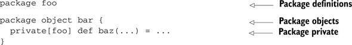</p>
      
      
      <p class="noind"><a id="iddle1153" class="calibre25"></a><a id="iddle1306" class="calibre25"></a><a id="iddle1604" class="calibre25"></a><a id="iddle1846" class="calibre25"></a><a id="iddle1934" class="calibre25"></a>Hope isn’t lost. As stated before, most build utilities allow you to create a Scala REPL session against your current project.
         As a last resort you can toy with some concept in a Scala file, recompile, and restart your REPL session.
      </p>
      
      <p class="noind">A tool known as JRebel (<a href="http://mng.bz/8b4t" class="calibre7">http://mng.bz/8b4t</a>) can dynamically reload class files within a running JVM. The JRebel team has graciously provided free licenses when used
         with Scala. This tool, combined with some form of continuous compilation, available in most Scala build tools, will allow
         you to modify your project files and have the changed behavior be immediately available within you REPL session. For the maven-scala-plugin,
         the details for continuous compilation are located at <a href="http://mng.bz/qG78" class="calibre7">http://mng.bz/qG78</a>. The Simple Build Tool (<a href="http://mng.bz/2f7Q" class="calibre7">http://mng.bz/2f7Q</a>) provides the <kbd class="calibre18">cc</kbd> target for continuous compilation. Whatever build tool you use to start a REPL session must be integrated with a JRebel classloader
         so that dynamic class reloading can happen. This technique is a bit detailed and prone to change, so please check your build
         tool’s documentation or the JRebel website for help.
      </p>
      
      <p class="noind">The REPL will allow you to try out Scala code and get a real feel for what you’re doing before attempting to create some large
         complicated system. It’s often important in software development to get a slightly more than cursory knowledge of a system
         before tackling a new feature. The Scala REPL should allow you to do so with a minimal amount of time, allowing you to improve
         your development skills.
      </p>
      
      <p class="noind">This entire book is enriched with examples of code from the REPL, as it’s the best tool to teach and learn Scala. I often
         find myself running sample programs completely via the REPL before I even create some kind of “main” method, or a unit test,
         as is standard within Java development. To help encourage this, the book favors demonstrating concepts in the REPL using a
         few simple scripts. Please feel free to follow along with a REPL of your own.
      </p>
      <p class="calibre2"> </p><table cellspacing="5" width="100%" border="1" class="calibre10"><colgroup class="calibre19"><col width="550" class="calibre12"/></colgroup><tbody class="calibre13"><tr class="calibre14"><td class="calibre20"/>
            </tr></tbody></table><h5 class="notetitle" id="ch02note02">Use the Repl Everywhere!</h5>
      
      
      <p class="noindclose">No matter what build environment you use, the REPL can dramatically improve your development process. All the major IDEs have
         support for running the Scala REPL and most of the major build tools. Consult the documentation of the Scala integration for
         your IDE or build system for details on how to ensure a good REPL experience. For bonus points, use the REPL in combination
         with a graphical debugger.
      </p>
      
      <table cellspacing="5" width="100%" border="1" class="calibre10"><colgroup class="calibre19"><col width="550" class="calibre12"/></colgroup><tbody class="calibre13"><tr class="calibre14"><td class="calibre20"/>
            </tr></tbody></table><p class="calibre2"> </p><p class="noind">The REPL is also a great way to begin learning how to use expressions rather than statements.</p>
      <p class="calibre2"> </p><table cellspacing="5" width="100%" border="1" class="calibre10"><colgroup class="calibre19"><col width="550" class="calibre12"/></colgroup><tbody class="calibre13"><tr class="calibre14"><td class="calibre20"/>
            </tr></tbody></table><div class="calibre4">
         
         <b id="ch02sb03" class="calibre21">Rule 2: Use expressions not statements</b>
         
         <p class="noind">In Scala, a lot of code can be written as small methods of one expression. This style is not only elegant, but helps in code
            maintenance.
         </p>
         
      </div>
      <table cellspacing="5" width="100%" border="1" class="calibre10"><colgroup class="calibre19"><col width="550" class="calibre12"/></colgroup><tbody class="calibre13"><tr class="calibre14"><td class="calibre20"/>
            </tr></tbody></table><p class="calibre2"> </p><h3 id="ch02lev1sec2" class="calibre17"><a id="ch02lev1sec2__title" class="calibre6"></a>2.2. Think in expressions
      </h3>
      
      <p class="noind"><i class="calibre9">Expression-oriented programming</i> is a term I use to refer to the use of expressions rather than statements in code. What’s the difference between an expression
         and a statement? A statement is something that executes, but an expression is something that evaluates. <a id="iddle1006" class="calibre25"></a><a id="iddle1308" class="calibre25"></a><a id="iddle1468" class="calibre25"></a><a id="iddle1469" class="calibre25"></a><a id="iddle1837" class="calibre25"></a>What does this mean in practice? Expressions return values. Statements execute code, but there’s no value returned. In this
         section, we’ll learn all about expression-oriented programming and how it can help simplify your programs. We’ll also look
         at mutability of objects, and how it interacts with expression-oriented programming.
      </p>
      <p class="calibre2"> </p><table cellspacing="5" width="100%" border="1" class="calibre10"><colgroup class="calibre19"><col width="550" class="calibre12"/></colgroup><tbody class="calibre13"><tr class="calibre14"><td class="calibre20"/>
            </tr></tbody></table><h5 class="notetitle" id="ch02note03">Statement Versus Expression</h5>
      
      
      <p class="noindclose">A statement is something that executes; an expression is something that evaluates to a value.</p>
      
      <table cellspacing="5" width="100%" border="1" class="calibre10"><colgroup class="calibre19"><col width="550" class="calibre12"/></colgroup><tbody class="calibre13"><tr class="calibre14"><td class="calibre20"/>
            </tr></tbody></table><p class="calibre2"> </p><p class="noind">Expressions are blocks of code that evaluate to a value. In Scala, some control blocks are also expressions. This means that
         if the control were to branch, each of these branches must evaluate to a value as well. The <kbd class="calibre18">if</kbd> clause is a great example; this checks a conditional expression and returns one expression or another, depending on the value
         of the conditional expression. Let’s look at a simple REPL session:
      </p>
      
      <pre id="PLd0e2512" class="calibre8">scala&gt; if(true) "true string" else "false string"
res4: String = true string

scala&gt; if(false) 5 else "hello"
res5: Any = hello</pre>
      
      <p class="noind">As you can see, in Scala an <kbd class="calibre18">if</kbd> block is an expression. Our first <kbd class="calibre18">if</kbd> block returns <kbd class="calibre18">"true string"</kbd>, the true expression. The second <kbd class="calibre18">if</kbd> block returns <i class="calibre9">hello</i>, the result of the false expression. To accomplish something similar in Java, you would use the <kbd class="calibre18">?:</kbd> syntax as shown in the following:
      </p>
      
      <pre id="PLd0e2539" class="calibre8">String x = true ? "true string" : "false string"</pre>
      
      <p class="noind">An <kbd class="calibre18">if</kbd> block in Java is therefore distinct from a <kbd class="calibre18">?:</kbd> expression in that it doesn’t evaluate to a value. You can’t assign the result of an <kbd class="calibre18">if</kbd> block in Java, but Scala has unified the concept of <kbd class="calibre18">?:</kbd> with its <kbd class="calibre18">if</kbd> blocks. Scala has no <kbd class="calibre18">?:</kbd> syntax; you merely use <kbd class="calibre18">if</kbd> blocks. This is the beginning of expression-oriented programming. In fact, Scala has few statements that do <i class="calibre9">not</i> return values from their last expression.
      </p>
      
      
      <h4 id="ch02lev2sec4" class="calibre28">2.2.1. <a id="ch02lev2sec4__title" class="calibre25"></a>Don’t use return
      </h4>
      
      <p class="noind">One of the keys to using expressions is realizing that there’s no need for a return statement. An expression evaluates to
         a value, so there’s no need to return.
      </p>
      
      <p class="noind">While programming in Java, there was a common practice of having a single point of return for any method. This meant that
         if there was some kind of conditional logic, the developer would create a variable that contained the eventual return value.
         As the method flowed, this variable would be updated with what the method should return. The last line in every method would
         be a return statement. The following listing shows an example.
      </p>
      
      
      
      <h5 class="notetitle" id="ch02list4">Listing 2.4. <a id="ch02list4__title" class="calibre25"></a>Java idiom: one return statement
      </h5>
      
      <p class="center1">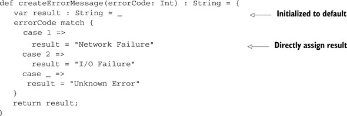</p>
      
      
      <p class="noind"><a id="iddle1141" class="calibre25"></a><a id="iddle1238" class="calibre25"></a><a id="iddle1477" class="calibre25"></a><a id="iddle1767" class="calibre25"></a><a id="iddle1834" class="calibre25"></a>As you can see, the <kbd class="calibre18">result</kbd> variable is used to store the final result. The code falls through a pattern match, assigning error strings as appropriate,
         then returns the <kbd class="calibre18">result</kbd> variable. We can improve this code slightly by using the expression-oriented syntax that pattern matching allows. A pattern
         match returns a value. The type of the value is determined as a common super type from all case statement returns. Pattern
         matching also throws an exception if no pattern is matched, so we’re guaranteed a return or error here. The following listing
         shows the code translated for an expression-oriented pattern match.
      </p>
      
      
      
      <h5 class="notetitle" id="ch02list5">Listing 2.5. <a id="ch02list5__title" class="calibre25"></a>Updated <kbd class="calibre18">createErrorMessage</kbd> with expression-oriented pattern match
      </h5>
      
      <p class="center1">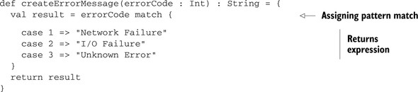</p>
      
      
      <p class="noind">You’ll notice two things. First, we changed the result variable to a <kbd class="calibre18">val</kbd> and let the type inferencer determine the type. This is because we no longer have to change the <kbd class="calibre18">val</kbd> after assignment; the pattern match should determine the unique value. Therefore, we reduced the size and complexity of the
         code, and we increased immutability in the program. <i class="calibre9">Immutability</i> refers to the unchanging state of an object or variable; it’s the opposite of mutability. <i class="calibre9">Mutability</i> is the ability of an object or variable to change or mutate during its lifetime. We’ll cover mutability and expression-oriented
         programming in the next section. You’ll frequently find that expression-oriented programming and immutable objects work well
         together.
      </p>
      
      <p class="noind">The second thing we’ve done is remove any kind of assignment from the case statements. The last expression in a case statement
         is the “result” of that case statement. We could have embedded further logic in each case statement if necessary, as long
         as we eventually had some kind of expression at the bottom. The compiler will also warn us if we accidentally forget to return,
         or somehow return the wrong type.
      </p>
      
      <p class="noind">The code is looking a lot more concise, but we can still improve it somewhat. In Scala, most developers avoid return statements
         in their code; they prefer to have the last expression be the return value (similar to all the other expression-oriented styles).
         In fact, for the <kbd class="calibre18">createErrorMessage</kbd> method, we can remove the intermediate <kbd class="calibre18">result</kbd> variable altogether. The following listing shows the final transformation.
      </p>
      
      
      <p class="noind"></p>
      
      
      <h5 class="notetitle" id="ch02list6">Listing 2.6. <a id="ch02list6__title" class="calibre25"></a>Final expression-oriented <kbd class="calibre18">createErrorMessage</kbd> method
      </h5>
      <pre id="PLd0e2678" class="calibre8">def createErrorMessage(errorCode: Int) : String = errorCode match {
  case 1 =&gt; "Network Failure"
  case 2 =&gt; "I/O Failure"
  case _ =&gt; "Unknown Error"
}</pre>
      
      <p class="noind"><a id="iddle1307" class="calibre25"></a><a id="iddle1309" class="calibre25"></a><a id="iddle1487" class="calibre25"></a><a id="iddle1673" class="calibre25"></a>Note how we haven’t even opened up a code block for the method? The pattern match is the only statement in the method, and
         it returns an expression of type <kbd class="calibre18">String</kbd>. We’ve completely transformed the method into an expression-oriented syntax. Note how much more concise and expressive the
         code is. Also note that the compiler will warn us of any type infractions or unreachable case statements.
      </p>
      
      
      
      <h4 id="ch02lev2sec5" class="calibre28">2.2.2. <a id="ch02lev2sec5__title" class="calibre25"></a>Mutability
      </h4>
      
      <p class="noind">Expression-oriented programming becomes slightly more interesting when mixed with mutability, or the ability to change an
         object’s state during its lifetime. This is because code utilizing mutable objects tends to be written in an imperative style.
      </p>
      
      <p class="noind">Imperative coding is a style that you’re probably used to. Many early languages such as C, Fortran, and Pascal are imperative.
         Imperative code tends to be made of statements, not expressions. Objects are created which have state. Then statements are
         executed that “mutate” or change the state of an object. In the case of languages that don’t have objects, the same mechanisms
         apply, except with variables and structures. The following listing shows an example of imperative code.
      </p>
      
      
      
      <h5 class="notetitle" id="ch02list7">Listing 2.7. <a id="ch02list7__title" class="calibre25"></a>Example of imperative style code
      </h5>
      <pre id="PLd0e2728" class="calibre8">val x = Vector2D(0.0,0.0)
x.magnify(2.0)</pre>
      
      <p class="noind">Note how a vector is constructed and then mutated via the magnify method. Expression-oriented code prefers having all statements
         return some expression or value, which would include the move method. In the case of object mutation, what value should be
         returned? One option is to return the object that was just mutated, as in the following listing.
      </p>
      
      
      
      <h5 class="notetitle" id="ch02list8">Listing 2.8. <a id="ch02list8__title" class="calibre25"></a>Example mutable expression-oriented method
      </h5>
      <pre id="PLd0e2740" class="calibre8">class Vector2D(var x: Double, var y: Double) {
  def magnify(amt: Double) : Vector2D = {
     x *= amt
     y *= amt
     this
  }
}</pre>
      
      <p class="noind">This may seem a great option but has some serious drawbacks. In particular, it can get confusing determining when an object
         is being mutated, especially when combined with immutable objects. See if you can determine what values should print at the
         end <a id="iddle1001" class="calibre25"></a><a id="iddle1470" class="calibre25"></a><a id="iddle1655" class="calibre25"></a><a id="iddle1678" class="calibre25"></a><a id="iddle1727" class="calibre25"></a><a id="iddle1768" class="calibre25"></a>of this block of code. Assume that the <kbd class="calibre18">-</kbd> method defined on <kbd class="calibre18">Vector2D</kbd> follows the mathematical definition. Now for the listing.
      </p>
      
      
      
      <h5 class="notetitle" id="ch02list9">Listing 2.9. <a id="ch02list9__title" class="calibre25"></a>Mixing immutable and mutable objects with expression
      </h5>
      <pre id="PLd0e2790" class="calibre8">scala&gt; val x = new Vector2D(1.0, 1.0)
x : Vector2D = Vector2D(1.0,1.0)

scala&gt; val y = new Vector2D(-1.0, 1.0)
y : Vector2D = Vector2D(1.0, 1.0)

scala&gt; x.magnify(3.0) - (x - y).magnify(3.0)
res0 : mutable.Vector2D = ???</pre>
      
      <p class="noind">What is the result of the preceding expression, then? On first look, we would expect it to be the vector (3.0,3.0) minus the
         vector (6.0,0.0), which is (-3.0,3.0). But each of these variables is mutable. This means that the operations are modifying
         the variables in the order they’re used. Let’s evaluate this as it’s compiled. First the <kbd class="calibre18">x</kbd> vector, (1.0,1.0) is magnified by 3 to become (3.0,3.0). Next, we subtract <kbd class="calibre18">y</kbd> from <kbd class="calibre18">x</kbd> to give <kbd class="calibre18">x</kbd> the value (2.0,4.0). Why? Because the right-hand side of the <kbd class="calibre18">-</kbd> method must be evaluated next, and <kbd class="calibre18">(x-y)</kbd> is the first part of this expression. We then magnify <kbd class="calibre18">x</kbd> by 3.0 again, bringing the value to (6.0,12.0). Finally we subtract <kbd class="calibre18">x</kbd> from itself, bringing the resulting value to (0.0,0.0). That’s right—<kbd class="calibre18">x</kbd> is subtracted from itself. Why? Because the expression on the left-hand side of the - and the right-hand side of the minus
         both start with the <kbd class="calibre18">x</kbd> variable. Because we’re using mutability, this means that each expression returns <kbd class="calibre18">x</kbd> itself. So no matter what we do, we wind up calling <kbd class="calibre18">x - x</kbd> which results in the vector (0.0, 0.0).
      </p>
      
      <p class="noind">Because of this confusion, it’s best to prefer immutability when using objects and expression-oriented programming. This is
         particularly the case with operator overloading, as with the previous example. Some examples can demonstrate where mutability
         works well with expression-oriented programming, particularly with pattern matching or <kbd class="calibre18">if</kbd> statements.
      </p>
      
      <p class="noind">Code has a common task where you need to look up values on an object based on some value. These objects may be immutable or
         mutable. But expression-oriented programming comes in to simplify the lookup. Let’s consider a simple example of looking up
         the action to perform based on a Menu button click. When we click the Menu button, we receive an event from our event system.
         This event is marked with the identifier of the button pressed. We want to perform some action and return a status. Let’s
         check out the code in the following listing.
      </p>
      
      <h5 class="notetitle" id="ch02list10">Listing 2.10. <a id="ch02list10__title" class="calibre25"></a>Mutable objects and expressions—the right way
      </h5>
      <p class="center1">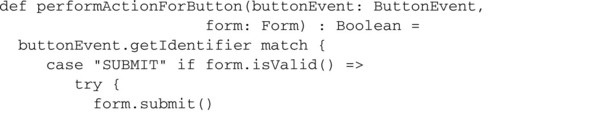</p>
      <p class="center1">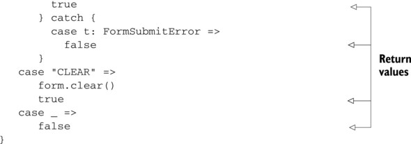</p>
      
      <p class="noind"><a id="iddle1125" class="calibre25"></a><a id="iddle1160" class="calibre25"></a><a id="iddle1303" class="calibre25"></a><a id="iddle1484" class="calibre25"></a><a id="iddle1658" class="calibre25"></a><a id="iddle1680" class="calibre25"></a><a id="iddle2101" class="calibre25"></a>Note how we’re mutating the objects in place and then returning our result. Instead of an explicit return statement, we state
         the expression we wish to return. You can see the code here is more succinct than creating a variable to hold the result variable.
         You’ll also notice that mixing mutation statements with our expressions has reduced some of the clarity of the code. This
         is one of the reasons why it’s better to prefer immutable code—the topic of our next section.
      </p>
      
      <p class="noind">Expression-oriented programming can reduce boilerplate and provide elegant code. It’s accomplished through having all statements
         return meaningful values. You can now reduce clutter and increase expressiveness within your code.
      </p>
      
      <p class="noind">Expression-oriented programming tends to pair favorably with immutable programming, but less so with mutable objects. Immutability
         is a term to denote that something doesn’t change, in this case the state of an object, once constructed.
      </p>
      
      
      
      
      <h3 id="ch02lev1sec3" class="calibre17"><a id="ch02lev1sec3__title" class="calibre6"></a>2.3. Prefer immutability
      </h3>
      
      <p class="noind">Immutability, in programming, refers to the unchanging state of objects after construction. This is one of the capstones of
         functional programming and a recommended practice for object-oriented design on the JVM. Scala is no exception here and prefers
         immutability in design, making it the default in many cases. This can be tricky. In this section, you’ll learn how immutability
         can help when dealing with equality issues or concurrent programs.
      </p>
      <p class="calibre2"> </p><table cellspacing="5" width="100%" border="1" class="calibre10"><colgroup class="calibre19"><col width="550" class="calibre12"/></colgroup><tbody class="calibre13"><tr class="calibre14"><td class="calibre20"/>
            </tr></tbody></table><div class="calibre4">
         
         <b id="ch02sb04" class="calibre21">Rule 3: Prefer Immutability</b>
         
         <p class="noind">Creating immutable classes drastically reduces the number of potential runtime issues. When in doubt, it’s safest to stay
            immutable.
         </p>
         
      </div>
      <table cellspacing="5" width="100%" border="1" class="calibre10"><colgroup class="calibre19"><col width="550" class="calibre12"/></colgroup><tbody class="calibre13"><tr class="calibre14"><td class="calibre20"/>
            </tr></tbody></table><p class="calibre2"> </p><p class="noind">The most important thing to realize in Scala is that there’s a difference between an immutable object and an immutable reference.
         In Scala, all variables are references to objects. Defining a variable as a <kbd class="calibre18">val</kbd> means that it’s an immutable <i class="calibre9">reference</i>. All method parameters are immutable references, and class arguments default to being immutable references. The only way
         to create a mutable variable is through the <kbd class="calibre18">var</kbd> syntax. The immutability of the reference doesn’t affect whether the object referred to is immutable. You can have a mutable
         reference to an immutable object and vice versa. This means it’s important to know whether the object itself is immutable
         or mutable.
      </p>
      
      <p class="noind">Determining immutability constraints on objects isn’t obvious. In general, it’s safe to assume that if the documentation states
         an object is immutable, then it is; <a id="iddle1479" class="calibre25"></a><a id="iddle1671" class="calibre25"></a><a id="iddle1709" class="calibre25"></a><a id="iddle1774" class="calibre25"></a><a id="iddle2055" class="calibre25"></a><a id="iddle2056" class="calibre25"></a>otherwise, be careful. The Scala standard library helps make the delineation obvious in its collections classes by having
         parallel package hierarchies, one for immutable classes and one for mutable classes.
      </p>
      
      <p class="noind">In Scala immutability is important because it can help programmers reason through their code. If an object’s state doesn’t
         change, then you can determine where objects are created to see where state changes. It can also simplify methods that are
         based on the state of an object. This benefit is particularly evident when defining equality or writing concurrent programs.
      </p>
      
      
      <h4 id="ch02lev2sec6" class="calibre28">2.3.1. <a id="ch02lev2sec6__title" class="calibre25"></a>Object equality
      </h4>
      
      <p class="noind">One critical reason to prefer immutability is the simplification of object equality. If an object won’t change state during
         its lifetime, one can create an equals implementation that is both deep and correct for any object of that type. This is also
         critical when creating a hash function for objects. A hash function is one that returns a simplified representation of an
         object, usually an integer, that can be used to quickly identify the object. A good hash function and equals method are usually
         paired, if not through code, then in logical definition. If state changes during the lifetime of an object, it can ruin any
         hash code that was generated for the object. This in turn can affect the equality tests of the object. The following listing
         shows a simple example of a two-dimensional geometric point class.
      </p>
      
      
      
      <h5 class="notetitle" id="ch02list11">Listing 2.11. <a id="ch02list11__title" class="calibre25"></a>Mutable <kbd class="calibre18">Point2</kbd> class
      </h5>
      <pre id="PLd0e2989" class="calibre8">class Point2(var x: Int, var y: Int) {
  def move(mx: Int, my: Int) : Unit = {
    x = x + mx
    y = y + my
  }
}</pre>
      
      <p class="noind">The <kbd class="calibre18">Point2D</kbd> class is simple. It consists of <i class="calibre9">x</i> and <i class="calibre9">y</i> values, corresponding to locations on the x and y axes. It also has a <kbd class="calibre18">move</kbd> method, which is used to move the point around the two-dimensional plane. Imagine we want to tie labels to particular points
         on this 2-D plane, where each label is only a string. To do so, we’d like to use a map of <kbd class="calibre18">Point2D</kbd> to string values. For efficient lookup, we’re going to use a hashing function and a <kbd class="calibre18">HashMap</kbd>. Let’s try the simplest possible thing, hashing with the <i class="calibre9">x</i> and <i class="calibre9">y</i> variables directly, in the following listing.
      </p>
      
      
      
      <h5 class="notetitle" id="ch02list12">Listing 2.12. <a id="ch02list12__title" class="calibre25"></a>Mutable <kbd class="calibre18">Point2</kbd> class with hashing function
      </h5>
      <pre id="PLd0e3030" class="calibre8">class Point2(var x: Int, var y: Int) {
  def move(mx: Int, my: Int) : Unit = {
    x = x + mx
    y = y + my
  }
  override def hashCode(): Int = y + (31*x)
}
scala&gt; val x = new Point2(1,1)
x: Point2 = Point2@20

scala&gt; x.##
res1: Int = 32

scala&gt; val y = new Point2(1,2)
y: Point2 = Point2@21

scala&gt; import collection.immutable.HashMap
import collection.immutable.HashMap

scala&gt; val map = HashMap(x -&gt; "HAI", y -&gt; "ZOMG")
map: scala.collection.immutable.HashMap[
  Point2,java.lang.String] =
  Map((Point2@21,ZOMG), (Point2@20,HAI))

scala&gt; map(x)
res4: java.lang.String = HAI

scala&gt; val z = new Point2(1,1)
z: Point2 = Point2@20

scala&gt; map(z)
java.util.NoSuchElementException: key not found: Point2@20
...</pre>
      
      <p class="noind"><a id="iddle1021" class="calibre25"></a><a id="iddle1033" class="calibre25"></a><a id="iddle1080" class="calibre25"></a><a id="iddle1293" class="calibre25"></a><a id="iddle1435" class="calibre25"></a><a id="iddle1773" class="calibre25"></a>Things appear to be working exactly as we want—until we attempt to construct a new point object with the same values as point
         <i class="calibre9">x</i>. This point should hash into the same section of the map, but the equality check will fail because we haven’t created our
         own equality method. By default, Scala uses object location equality and hashing, but we’ve only overridden the hash code.
         Object location equality is using the address in memory for an object as the only factor to determine if two objects are equal.
         In our <kbd class="calibre18">Point2</kbd> case, object location equality can be a quick check for equality, but we can also make use of the <i class="calibre9">x</i> and <i class="calibre9">y</i> locations to check for equality.
      </p>
      
      <p class="noind">You may have noticed that the <kbd class="calibre18">Point2</kbd> class overrides the <kbd class="calibre18">hashCode</kbd> method, but I’m calling the <kbd class="calibre18">##</kbd> method on the instance <kbd class="calibre18">x</kbd>. This is a convention in Scala. For compatibility with Java, Scala utilizes the same <kbd class="calibre18">equals</kbd> and <kbd class="calibre18">hashCode</kbd> methods defined on <kbd class="calibre18">java.lang.Object</kbd>. But Scala also abstracts primitives such that they appear as full objects. The compiler will box and unbox the primitives
         as needed for you. These primitive-like objects are all subtypes of <kbd class="calibre18">scala.AnyVal</kbd> whereas “standard” objects, those that would have extended <kbd class="calibre18">java.lang.Object</kbd>, are subtypes of <kbd class="calibre18">scala.AnyRef. scala.AnyRef</kbd> can be considered an alias for <kbd class="calibre18">java.lang.Object</kbd>. As the <kbd class="calibre18">hashCode</kbd> and <kbd class="calibre18">equals</kbd> methods are defined on <kbd class="calibre18">AnyRef</kbd>, Scala provides the methods <kbd class="calibre18">##</kbd> and <kbd class="calibre18">==</kbd> that you can use for both <kbd class="calibre18">AnyRef</kbd> and <kbd class="calibre18">AnyVal</kbd>.
      </p>
      <p class="calibre2"> </p><table cellspacing="5" width="100%" border="1" class="calibre10"><colgroup class="calibre19"><col width="550" class="calibre12"/></colgroup><tbody class="calibre13"><tr class="calibre14"><td class="calibre20"/>
            </tr></tbody></table><h5 class="notetitle" id="ch02note04">Hashcode and Equals Should Always be Paired</h5>
      
      
      <p class="noindclose">The <kbd class="calibre18">equals</kbd> and <kbd class="calibre18">hashCode</kbd> methods should always be implemented such that if <kbd class="calibre18">x == y</kbd> then <kbd class="calibre18">x.## == y.##</kbd>.
      </p>
      
      <table cellspacing="5" width="100%" border="1" class="calibre10"><colgroup class="calibre19"><col width="550" class="calibre12"/></colgroup><tbody class="calibre13"><tr class="calibre14"><td class="calibre20"/>
            </tr></tbody></table><p class="calibre2"> </p><p class="noind">Let’s implement our own equality method in the following listing and see what the results are.</p>
      
      
      <p class="noind"></p>
      
      
      <h5 class="notetitle" id="ch02list13">Listing 2.13. <a id="ch02list13__title" class="calibre25"></a>Mutable <kbd class="calibre18">Point2</kbd> class with hashing and equality
      </h5>
      <pre id="PLd0e3172" class="calibre8">class Point2(var x: Int, var y: Int) extends Equals {
  def move(mx: Int, my: Int) : Unit = {
    x = x + mx
    y = y + my
  }
  override def hashCode(): Int = y + (31*x)
  def canEqual(that: Any): Boolean = that match {
     case p: Point2 =&gt; true
     case _ =&gt; false
  }
  override def equals(that: Any): Boolean = {
    def strictEquals(other: Point2) =
       this.x == other.x &amp;&amp; this.y == other.y
    that match {
      case a: AnyRef if this eq a =&gt; true
      case p: Point2 =&gt; (p canEqual this) &amp;&amp; strictEquals(p)
      case _ =&gt; false
    }
  }
}

scala&gt; val x = new Point2(1,1)
x: Point2 = Point2@20

scala&gt; val y = new Point2(1,2)
y: Point2 = Point2@21

scala&gt; val z = new Point2(1,1)
z: Point2 = Point2@20

scala&gt; x == z
res6: Boolean = true

scala&gt; x == y
res7: Boolean = false</pre>
      
      <p class="noind"><a id="iddle1966" class="calibre25"></a>The implementation of <kbd class="calibre18">equals</kbd> may look strange, but will be covered in more detail in <a href="#ch02lev2sec10" class="calibre7">section 2.5.2</a>. For now, note that the <kbd class="calibre18">strictEquals</kbd> helper method compares the <i class="calibre9">x</i> and <i class="calibre9">y</i> values directly. This means that two points are considered equal if they are in the same location. We’ve now tied our <kbd class="calibre18">equals</kbd> and <kbd class="calibre18">hashCode</kbd> methods to the same criteria, the <kbd class="calibre18">x</kbd> and <kbd class="calibre18">y</kbd> values. Let’s throw our <i class="calibre9">x</i> and <i class="calibre9">y</i> values into a <kbd class="calibre18">HashMap</kbd> again, only this time we’re going to move the <i class="calibre9">x</i> value, and see what happens to the label attached to it.
      </p>
      
      
      
      <h5 class="notetitle" id="ch02list14">Listing 2.14. <a id="ch02list14__title" class="calibre25"></a>Mutating <kbd class="calibre18">Point2</kbd> with <kbd class="calibre18">HashMap</kbd></h5>
      <pre id="PLd0e3235" class="calibre8">scala&gt; val map = HashMap(x -&gt; "HAI", y -&gt; "WORLD")
map: scala.collection.immutable.HashMap[Point2,java.lang.String] =
   Map((Point2@21,WORLD), (Point2@20,HAI))

scala&gt; x.move(1,1)

scala&gt; map(y)
res9: java.lang.String = WORLD

scala&gt; map(x)
java.util.NoSuchElementException: key not found: Point2@40
...

scala&gt; map(z)
java.util.NoSuchElementException: key not found: Point2@20
...</pre>
      
      <p class="noind"><a id="iddle1436" class="calibre25"></a>What happened to the label attached to <i class="calibre9">x</i>? We placed it into the <kbd class="calibre18">HashMap</kbd> when <i class="calibre9">x</i> has a value of (1,1). This means it had a hash code of 32. We then move <i class="calibre9">x</i> to (2,2), changing its hash code to 64. Now when we try to look up the label in the map using <i class="calibre9">x</i>, it can’t be found because <i class="calibre9">x</i> was encoding with the hash bucket of 32, and it’s looking in the hash bucket for 64. Well, what if we try to look up the
         value using a new point, <i class="calibre9">z</i>, that still has a hash code of 32? It also fails, because <i class="calibre9">x</i> and <i class="calibre9">z</i> aren’t equal according to our rules. You see, a <kbd class="calibre18">HashMap</kbd> uses the hash at the time of insertion to store values but doesn’t update when an object’s state mutates. This means we’ve
         lost our label for <i class="calibre9">x</i> when using hash-based lookup, but we can still retrieve the value when traversing the map or using traversal algorithms:
      </p>
      
      <pre id="PLd0e3284" class="calibre8">scala&gt; map.find( _._1 == x)
res13: Option[(Point2, java.lang.String)] = Some((Point2@40,HAI))</pre>
      
      <p class="noind">As you can see, this behavior is rather confusing, and can cause no end of strife when debugging. As such, it’s generally
         recommended to ensure the following constraints when implementing equality:
      </p>
      
      <p class="calibre22"></p>
      <ul class="calibre23"><li class="calibre24">If two objects are equal, they should have the same <kbd class="calibre18">hashCode</kbd>.
         </li>
         
         <li class="calibre24">A <kbd class="calibre18">hashCode</kbd> computed for an object won’t change for the life of the object.
         </li>
         
         <li class="calibre24">When sending an object to another JVM, equality should be determined using attributes available in both JVMs.</li>
         
      </ul><p class="noind">As you can see, the second constraint implies that all criteria used in creating a <kbd class="calibre18">hash-Code</kbd> should <i class="calibre9">not</i> change with the life of an object. The last statement, when applicable, means that an object’s hash and equals method should
         be computed using its own internal state. Combine this with the first statement, and you find that the only way to satisfy
         these requirements is through the use of immutable objects. If the state of an object never changes, it’s acceptable to use
         it in computing a hash code or when testing equality. You can also serialize the object to another JVM and continue to have
         a consistent hash code and equality.
      </p>
      
      <p class="noind">You may be wondering, why do I care about sending objects to other JVMs? My software will never run on more than one JVM.
         In fact, my software runs on a mobile device, where resources are critical. The problem with that thinking is that serializing
         an object to another JVM need not be done in real time. I could save some program state to disk and read it back later. This
         is effectively the same as sending something to another JVM. Although you may not be directly sending it over the network,
         you’re sending it through time, where the JVM of today is the writer of data, and the JVM started tomorrow is the user of
         the data. In these instances, having a hash code and equals implementation is critical.
      </p>
      
      <p class="noind"><a id="iddle1215" class="calibre25"></a><a id="iddle1257" class="calibre25"></a><a id="iddle1478" class="calibre25"></a><a id="iddle1517" class="calibre25"></a><a id="iddle1532" class="calibre25"></a><a id="iddle1640" class="calibre25"></a>The last constraint makes immutability a necessity. Remove this constraint, and there are only two simple ways to satisfy
         the first two constraints:
      </p>
      
      <p class="calibre22"></p>
      <ul class="calibre23"><li class="calibre24">Utilize only immutable object internal state in <kbd class="calibre18">hashCode</kbd> computation
         </li>
         
         <li class="calibre24">Use default concepts for equals and <kbd class="calibre18">hashCode</kbd></li>
         
      </ul><p class="noind">As you can see, this means that <i class="calibre9">something</i> in the object must be immutable. Making the entire object immutable simplifies this whole process greatly.
      </p>
      
      
      
      <h4 id="ch02lev2sec7" class="calibre28">2.3.2. <a id="ch02lev2sec7__title" class="calibre25"></a>Concurrency
      </h4>
      
      <p class="noind">Immutability doesn’t merely simplify object equality; it can also simplify concurrent access of data. Programs are becoming
         increasingly parallelized, and processors are splitting into multiple cores. The need to run concurrent threads of control
         in programs is growing across all forms of computing. Traditionally, this meant using creative means to protect access to
         shared data across these various threads of control. Protected mutable data usually means some form of locking. Immutability
         can help share state while reducing the need for locking.
      </p>
      
      <p class="noind">Locking entails a performance overhead. Threads that wish to read data can’t do so unless the lock is available to obtain.
         Even using read-write locks can cause issues, because a writer may be slow in preventing readers from accessing the data they
         desire. On the JVM, there are optimizations in the JIT to attempt to avoid locks when they aren’t necessary. In general, you
         want to have as few locks in your software as possible, but you want enough to encourage a high degree of parallelism. The
         more you can design your code to avoid locking the better. For instance, let’s try to measure the effect of locking on an
         algorithm and see if we can design a new algorithm that reduces the amount of locking.
      </p>
      
      <p class="noind">We’ll create an index service that we can query to find particular items by their key. The service will also allow users to
         add new items into the index. We expect to have many users looking up values and a smaller amount of users adding additional
         content to the index. Here’s the initial interface:
      </p>
      
      <pre id="PLd0e3400" class="calibre8">trait Service[Key,Value] {
  def lookUp(k: Key): Option[Value]
  def insert(k: Key, v: Value): Unit
}</pre>
      
      <p class="noind">The service is made up of two methods: <kbd class="calibre18">lookUp</kbd>, which will look up values in the index by the key, and <kbd class="calibre18">insert</kbd>, which will insert new values into the service. This service is like a map of key-to-value pairs. Let’s implement this using
         a locking and a mutable <kbd class="calibre18">HashMap</kbd>.
      </p>
      
      <pre id="PLd0e3418" class="calibre8">import collection.mutable.{HashMap=&gt;MutableHashMap}

class MutableService[Key, Value] extends Service[Key, Value] {
  val currentIndex = new MutableHashMap[Key, Value]
  def lookUp(k: Key): Option[Value] = synchronized(currentIndex.get(k))
  def insert(k: Key, v: Value): Unit = synchronized {
    currentIndex.put(k,v)
  }
}</pre>
      
      <p class="noind"><a id="iddle1244" class="calibre25"></a><a id="iddle1485" class="calibre25"></a><a id="iddle1679" class="calibre25"></a><a id="iddle1986" class="calibre25"></a><a id="iddle2142" class="calibre25"></a><a id="iddle2149" class="calibre25"></a>This class contains three members. The first is the <kbd class="calibre18">currentIndex</kbd>, which is a reference to the mutable <kbd class="calibre18">HashMap</kbd> that we use to store values. The <kbd class="calibre18">lookUp</kbd> and <kbd class="calibre18">insert</kbd> methods are both surrounded by a <kbd class="calibre18">synchronized</kbd> block, which synchronizes against the <kbd class="calibre18">MutableService</kbd>. You’ll notice that all operations on a <kbd class="calibre18">MutableService</kbd> require locking. But given what was stated about the usage of this service, the <kbd class="calibre18">lookUp</kbd> method will be called far more often than the <kbd class="calibre18">insert</kbd> method. A read-write lock could help in this situation, but let’s look at using immutability instead.
      </p>
      
      <p class="noind">We’ll change the <kbd class="calibre18">currentIndex</kbd> to be an <kbd class="calibre18">ImmutableHashMap</kbd> that get overwritten when the <kbd class="calibre18">insert</kbd> method is called. The <kbd class="calibre18">lookUp</kbd> method can then be free of any locking, as shown in the following code:
      </p>
      
      <pre id="PLd0e3500" class="calibre8">class ImmutableService[Key, Value] extends Service[Key, Value] {
  var currentIndex = new ImmutableHashMap[Key,Value]
  def lookUp(k: Key): Option[Value] = currentIndex.get(k)
  def insert(k: Key, v: Value): Unit = synchronized {
    currentIndex = currentIndex + ((k, v))
  }
}</pre>
      
      <p class="noind">The first thing to notice is that the <kbd class="calibre18">currentIndex</kbd> is a mutable reference to an immutable variable. We update this reference every time there’s an insert operation. The second
         thing to notice is that this service isn’t completely immutable. All that’s happened is the reduction of locking by utilizing
         an immutable <kbd class="calibre18">HashMap</kbd>. This simple change can cause a drastic improvement in running time.
      </p>
      
      <p class="noind">I’ve set up a simple micro-performance benchmark suite for these two classes. The basics of the suite are simple. We construct
         a set of tasks that will write items into the service and a set of tasks that will attempt to read items from the index. We
         then interleave the two sets of tasks and submit them to a queue of two threads for execution. We time the speed that this
         entire process takes and record the results. <a href="#ch02fig02" class="calibre7">Figure 2.2</a> shows some worst-case results.
      </p>
      
      
      
      <h5 class="notetitle" id="ch02fig02">Figure 2.2. <a id="ch02fig02__title" class="calibre25"></a>Immutable versus mutable service worst-case scenario
      </h5>
      
      <p class="center1">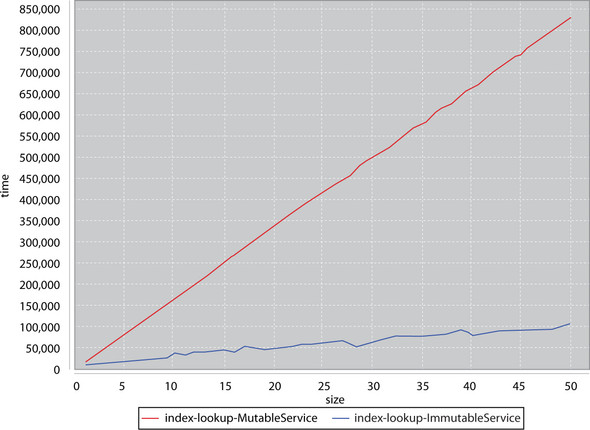</p>
      
      
      <p class="noind">The y-axis is the execution time of running a test. The x-axis corresponds to the number of <kbd class="calibre18">insert/lookUp</kbd> tasks submitted to the thread pools. You’ll notice that the mutable service’s execution time grows faster than the immutable
         service’s execution time. This graph certainly shows that extra locking can severely impact performance. But note that the
         execution times of this test can greatly vary. Due to the uncertainty of parallelism, this graph could look anywhere from
         the one shown above to a graph where the immutable service and mutable service execution times track relatively the same.
         In general, the <kbd class="calibre18">MutableService</kbd> implementation was slower than the <kbd class="calibre18">Immutable-Service</kbd>, but don’t judge performance from one graph or on execution alone.
      </p>
      
      <p class="noind"><a href="#ch02fig03" class="calibre7">Figure 2.3</a> shows another graph where you can see, for one particular test, the <kbd class="calibre18">MutableService</kbd> had all of its stars align and ran with a drastically reduced locking overhead. You can see in the preceding run where a
         single test case had all its timing align so that the <kbd class="calibre18">MutableService</kbd> could outperform the <kbd class="calibre18">ImmutableService</kbd>. Though possible for this specific case, the general case involved the <kbd class="calibre18">ImmutableService</kbd> outperforming the <kbd class="calibre18">MutableService</kbd>. If the assumptions stated here hold true for a real-life program, <a id="iddle1486" class="calibre25"></a>it appears that the <kbd class="calibre18">ImmutableService</kbd> will perform better in the general case and not suffer from random contention slowdowns.
      </p>
      
      
      
      <h5 class="notetitle" id="ch02fig03">Figure 2.3. <a id="ch02fig03__title" class="calibre25"></a>Immutable versus mutable service “one golden run” scenario
      </h5>
      
      <p class="center1">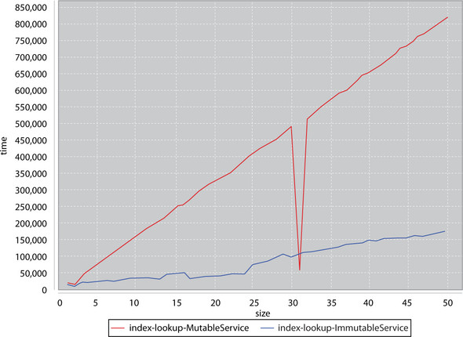</p>
      
      
      <p class="noind">The most important thing to realize is that immutable objects can be passed among many threads without fear of contention.
         The ability to remove locks, and all the potential bugs associated with them, can drastically improve the stability of a codebase.
         Combined with the improved reasoning one can get, as seen with the equals method, immutability is something to strive to maintain
         within a codebase.
      </p>
      
      <p class="noind">Immutability can ease concurrent development by reducing the amount of protection a developer must use when interacting with
         immutable objects. Scala also <a id="iddle1426" class="calibre25"></a><a id="iddle1700" class="calibre25"></a><a id="iddle1732" class="calibre25"></a><a id="iddle1870" class="calibre25"></a>provides a class called <kbd class="calibre18">Option</kbd> that allows developers to relax the amount of protection they need when dealing with <kbd class="calibre18">null</kbd>.
      </p>
      
      
      
      
      <h3 id="ch02lev1sec4" class="calibre17"><a id="ch02lev1sec4__title" class="calibre6"></a>2.4. Use None instead of null
      </h3>
      
      <p class="noind">Scala does its best to discourage the use of null in general programming. It does this through the <kbd class="calibre18">scala.Option</kbd> class found in the standard library. An <kbd class="calibre18">Option</kbd> can be considered a container of something or nothing. This is done through the two subclasses of <kbd class="calibre18">Option</kbd>: <kbd class="calibre18">Some</kbd> and <kbd class="calibre18">None</kbd>. <kbd class="calibre18">Some</kbd> denotes a container of exactly one item. <kbd class="calibre18">None</kbd> denotes an empty container, a role similar to what <kbd class="calibre18">Nil</kbd> plays for <kbd class="calibre18">List</kbd>.
      </p>
      <p class="calibre2"> </p><table cellspacing="5" width="100%" border="1" class="calibre10"><colgroup class="calibre19"><col width="550" class="calibre12"/></colgroup><tbody class="calibre13"><tr class="calibre14"><td class="calibre20"/>
            </tr></tbody></table><div class="calibre4">
         
         <b id="ch02sb05" class="calibre21">Rule 4: Use None instead of null</b>
         
         <p class="noind">While it was habit in Java to initialize values to null, Scala provides an <kbd class="calibre18">Option</kbd> type for the same purpose. <kbd class="calibre18">Option</kbd> is self-documenting for developers and, used correctly, can prevent unintended null pointer exceptions when using Scala.
         </p>
         
      </div>
      <table cellspacing="5" width="100%" border="1" class="calibre10"><colgroup class="calibre19"><col width="550" class="calibre12"/></colgroup><tbody class="calibre13"><tr class="calibre14"><td class="calibre20"/>
            </tr></tbody></table><p class="calibre2"> </p><p class="noind">In Java, and other languages that allow <kbd class="calibre18">null, null</kbd> is often used as a placeholder to denote a nonfatal error as a return value or to denote that a variable isn’t yet initialized.
         In Scala, one can denote this through the <kbd class="calibre18">None</kbd> subclass of <kbd class="calibre18">Option</kbd>. Conversely, one can denote an initialized, or nonfatal variable state through the <kbd class="calibre18">Some</kbd> subclass of <kbd class="calibre18">Option</kbd>. Let’s look at the usage of these two classes in the following listing.
      </p>
      
      
      
      <h5 class="notetitle" id="ch02list15">Listing 2.15. <a id="ch02list15__title" class="calibre25"></a>Simple usage of <kbd class="calibre18">Some</kbd> and <kbd class="calibre18">None</kbd></h5>
      <pre id="PLd0e3698" class="calibre8">scala&gt; var x : Option[String] = None
x: Option[String] = None

scala&gt; x.get
java.util.NoSuchElementException: None.get in

scala&gt; x.getOrElse("default")
res0: String = default

scala&gt; x = Some("Now Initialized")
x: Option[String] = Some(Now Initialized)

scala&gt; x.get
res0: java.lang.String = Now Initialized

scala&gt; x.getOrElse("default")
res1: java.lang.String = Now Initialized</pre>
      
      <p class="noind">An <kbd class="calibre18">Option</kbd> containing no value can be constructed via the <kbd class="calibre18">None</kbd> object. An <kbd class="calibre18">Option</kbd> that contains a value is created via the <kbd class="calibre18">Some</kbd> factory method. <kbd class="calibre18">Option</kbd> provides many differing ways of retrieving values from its inside. Of particular use are the <kbd class="calibre18">get</kbd> and <kbd class="calibre18">getOrElse</kbd> methods. The <kbd class="calibre18">get</kbd> method will attempt to access the value stored in an <kbd class="calibre18">Option</kbd> and will throw an exception if it’s empty. This is similar to accessing nullable values within other languages. The <kbd class="calibre18">getOrElse</kbd> method will attempt to access the value stored in an <kbd class="calibre18">Option</kbd>, if one exists; otherwise it will return the value supplied to the method. You should always prefer <kbd class="calibre18">getOrElse</kbd> over using <kbd class="calibre18">get</kbd>.
      </p>
      
      <p class="noind"><a id="iddle1262" class="calibre25"></a><a id="iddle1370" class="calibre25"></a><a id="iddle1701" class="calibre25"></a>Scala provides a factory method on the <kbd class="calibre18">Option</kbd> companion object that will convert from a Java style reference, where <kbd class="calibre18">null</kbd> implies an empty variable, into an <kbd class="calibre18">Option</kbd> where this is more explicit. Let’s take a quick look in the following listing.
      </p>
      
      
      
      <h5 class="notetitle" id="ch02list16">Listing 2.16. <a id="ch02list16__title" class="calibre25"></a>Usage of the <kbd class="calibre18">Option</kbd> factory
      </h5>
      
      <p class="center1">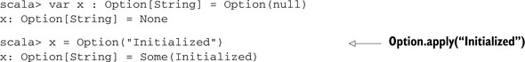</p>
      
      
      <p class="noind">The <kbd class="calibre18">Option</kbd> factory method will take a variable and create a <kbd class="calibre18">None</kbd> object if the input was <kbd class="calibre18">null</kbd>, or it will create a <kbd class="calibre18">Some</kbd> if the input was initialized. This makes it rather easy to take inputs from an untrusted source—that is, another JVM language—and
         wrap them into <kbd class="calibre18">Option</kbd>s. You might be asking yourself why you would want to do this. Isn’t checking for <kbd class="calibre18">null</kbd> just as simple in code? <kbd class="calibre18">Option</kbd> provides advanced features that make it far more ideal than using <kbd class="calibre18">null</kbd> and <kbd class="calibre18">if</kbd> checks.
      </p>
      
      
      <h4 id="ch02lev2sec8" class="calibre28">2.4.1. <a id="ch02lev2sec8__title" class="calibre25"></a>Advanced Option techniques
      </h4>
      
      <p class="noind">The greatest feature of <kbd class="calibre18">Option</kbd> is that you can treat it as a collection. This means you can perform the standard <kbd class="calibre18">map</kbd>, <kbd class="calibre18">flatMap</kbd>, and <kbd class="calibre18">foreach</kbd> methods, as well as utilize it inside a <kbd class="calibre18">for</kbd> expression. This helps ensure a nice concise syntax, and it opens a variety of different methods to handling uninitialized
         values. Let’s look at some common issues solved using <kbd class="calibre18">null</kbd> and their solutions using <kbd class="calibre18">Option</kbd>, starting with creating an object or returning a default.
      </p>
      
      
      <h5 class="notetitle" id="ch02lev3sec1"><a id="ch02lev3sec1__title" class="calibre25"></a>Create an Object or Return a Default
      </h5>
      
      <p class="noind">You’ll have many times in code when you’ll need to construct something if some other variable exists, or supply some sort
         of default. Let’s pretend that we have an application that requires some kind of temporary file storage for its execution.
         The application is designed so that a user may optionally specify a directory to store temporary files on the command line.
         If the user doesn’t specify a new file, if the argument provided by the user is not a real directory, or if they didn’t provide
         a directory, then we want to return a sensible default temporary directory. The following listing shows a method that will
         return this temporary directory:
      </p>
      
      
      
      <h5 class="notetitle" id="ch02list17">Listing 2.17. <a id="ch02list17__title" class="calibre25"></a>Creating an object or returning a default
      </h5>
      
      <p class="center1">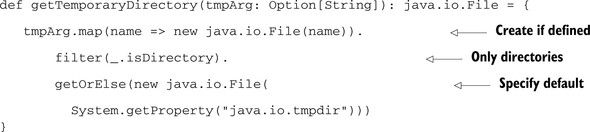</p>
      
      
      <p class="noind"><a id="iddle1330" class="calibre25"></a><a id="iddle1374" class="calibre25"></a><a id="iddle1428" class="calibre25"></a><a id="iddle1464" class="calibre25"></a><a id="iddle1702" class="calibre25"></a><a id="iddle2102" class="calibre25"></a><a id="iddle2103" class="calibre25"></a>The <kbd class="calibre18">getTemporaryDirectory</kbd> method takes the command-line parameter as an <kbd class="calibre18">Option</kbd> containing a <kbd class="calibre18">String</kbd> and returns a <kbd class="calibre18">File</kbd> object referencing the temporary directory we should use. The first thing we do is use the <kbd class="calibre18">map</kbd> method on <kbd class="calibre18">Option</kbd> to create a <kbd class="calibre18">java.io.File</kbd> if there was a parameter. Next, we make sure that this newly constructed file object is a directory. To do that, we use the
         <kbd class="calibre18">filter</kbd> method. This will check whether the value in an <kbd class="calibre18">Option</kbd> abides by some predicate, and if not, convert to a <kbd class="calibre18">None</kbd>. Finally, we check to see if we have a value in the <kbd class="calibre18">Option</kbd>; otherwise we return the default temporary directory.
      </p>
      
      <p class="noind">This enables a powerful set of checks without resorting to nested <kbd class="calibre18">if</kbd> statements or blocks. Sometimes we would like a block, such as when we want to execute a block of code based on the availability
         of a particular parameter.
      </p>
      
      
      
      <h5 class="notetitle" id="ch02lev3sec2"><a id="ch02lev3sec2__title" class="calibre25"></a>Execute Block of Code if Variable is Initialized
      </h5>
      
      <p class="noind"><kbd class="calibre18">Option</kbd> can be used to execute a block of code if the <kbd class="calibre18">Option</kbd> contains a value. This is done through the <kbd class="calibre18">foreach</kbd> method, which, as expected, iterates over all the elements in the <kbd class="calibre18">Option</kbd>. As an <kbd class="calibre18">Option</kbd> can only contain zero or one value, this means the block either executes or is ignored. This syntax works particularly well
         with <kbd class="calibre18">for</kbd> expressions. Let’s take a look at the following listing.
      </p>
      
      
      
      <h5 class="notetitle" id="ch02list18">Listing 2.18. <a id="ch02list18__title" class="calibre25"></a>Executing code if option is defined
      </h5>
      <pre id="PLd0e3985" class="calibre8">val username: Option[String] = ...

for(uname &lt;- username) {
   println("User: " + uname)
}</pre>
      
      <p class="noind">As you can see, this looks like a normal “iterate over a collection” control block. The syntax remains similar when we need
         to iterate over several variables. Let’s look at the case where we have some kind of Java servlet framework, and we want to
         be able to authenticate users. If authentication is possible, we want to inject our security token into the <kbd class="calibre18">HttpSession</kbd> so that later filters and servlets can check access privileges for this user, as in the following listing.
      </p>
      
      
      
      <h5 class="notetitle" id="ch02list19">Listing 2.19. <a id="ch02list19__title" class="calibre25"></a>Executing code if several options are defined
      </h5>
      
      <p class="center1">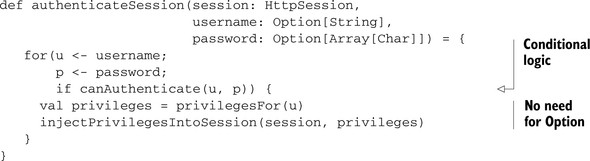</p>
      
      
      <p class="noind">Note that you can embed conditional logic in a <kbd class="calibre18">for</kbd> expression. This helps keep less nested logical blocks within your program. Another important consideration is that all the
         helper methods do <i class="calibre9">not</i> need to use the <kbd class="calibre18">Option</kbd> class. <kbd class="calibre18">Option</kbd> works as a great <a id="iddle1703" class="calibre25"></a>front-line defense for potentially uninitialized variables, but it doesn’t need to pollute the rest of your code. In Scala,
         <kbd class="calibre18">Option</kbd> as an argument implies that something may not be initialized. The opposite should be true as well. If a method takes a value
         that is not labeled as an <kbd class="calibre18">Option</kbd>, you should not pass it null or uninitialized parameters.
      </p>
      
      <p class="noind">Scala’s <kbd class="calibre18">for</kbd> expression syntax is rather robust, even allowing you to produce values, rather then execute code blocks. This is handy when
         you have a set of potentially uninitialized parameters that you want to transform into something else.
      </p>
      
      
      
      <h5 class="notetitle" id="ch02lev3sec3"><a id="ch02lev3sec3__title" class="calibre25"></a>Using Potential Uninitialized Variables to Construct Another Variable
      </h5>
      
      <p class="noind">Sometimes we want to transform a set of potentially uninitialized values so that we have to deal with only one. To do this,
         we need to use a <kbd class="calibre18">for</kbd> expression again, but this time using a <kbd class="calibre18">yield</kbd>. The following listing shows a case where a user has input some database credentials, or we attempted to read them from an
         encrypted location, and we want to create a database connection using these parameters. We don’t want to deal with failure
         in our function, as this is a utility function that won’t have access to the user. In this case, we’d like to transform our
         database connection configuration parameters into a single option containing our database.
      </p>
      
      
      
      <h5 class="notetitle" id="ch02list20">Listing 2.20. <a id="ch02list20__title" class="calibre25"></a>Merging options
      </h5>
      <pre id="PLd0e4063" class="calibre8">def createConnection(conn_url: Option[String],
                   conn_user: Option[String],
                   conn_pw: Option[String]) : Option[Connection] =
  for {
    url &lt;- conn_url
    user &lt;- conn_user
    pw &lt;- conn_pw
  } yield DriverManager.getConnection(url, user, pw)</pre>
      
      <p class="noind">This function does exactly what we need it to. It does seem, though, that we’re merely deferring all logic to <kbd class="calibre18">DriverManager.getConnection</kbd>. What if we wanted to abstract this such that we can take <i class="calibre9">any</i> function and create one that’s option-friendly in the same manner? The following listing shows what we’ll call the “lift”
         function.
      </p>
      
      <h5 class="notetitle" id="ch02list21">Listing 2.21. <a id="ch02list21__title" class="calibre25"></a>Generically converting functions
      </h5>
      <p class="center1">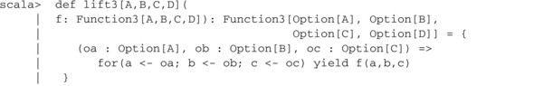</p>
      <p class="center1">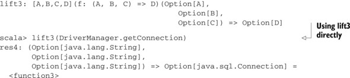</p>
      
      <p class="noind"><a id="iddle1236" class="calibre25"></a><a id="iddle1533" class="calibre25"></a><a id="iddle1590" class="calibre25"></a><a id="iddle1775" class="calibre25"></a><a id="iddle1777" class="calibre25"></a><a id="iddle2027" class="calibre25"></a>The <kbd class="calibre18">lift3</kbd> method looks somewhat like our earlier <kbd class="calibre18">createConnection</kbd> method, except that it takes a function as its sole parameter. The <kbd class="calibre18">Function3</kbd> trait represents a function that takes three arguments and returns a result. The <kbd class="calibre18">lift3</kbd> function takes a function of three arguments as input and outputs a new function of three arguments. As you can see from
         the REPL output, we can use this against existing functions to create option-friendly functions. We’ve directly taken the
         <kbd class="calibre18">DriverManager.get-Connection</kbd> method and lifted it into something that’s semantically equivalent to our earlier <kbd class="calibre18">createConnection</kbd> method. This technique works well when used with the “encapsulation” of uninitialized variables. You can write most of your
         code, even utility methods, assuming that everything is initialized, and then lift these functions into <kbd class="calibre18">Option</kbd>-friendly variants when needed.
      </p>
      
      <p class="noind">One important thing to mention is that <kbd class="calibre18">Option</kbd> derives its equality and <kbd class="calibre18">hashCode</kbd> from what it contains. In Scala, understanding equality and <kbd class="calibre18">hashCode</kbd>, especially in a polymorphic setting, is very important.
      </p>
      
      
      
      
      
      <h3 id="ch02lev1sec5" class="calibre17"><a id="ch02lev1sec5__title" class="calibre6"></a>2.5. Polymorphic equality
      </h3>
      
      <p class="noind">Let’s discuss how to properly implement an <kbd class="calibre18">equals</kbd> and <kbd class="calibre18">hashCode</kbd> function in Scala. This can be tricky in a polymorphic language, but can be done by following some basic rules. In general,
         it’s best to avoid having multiple concrete levels with classes that also need equality stronger then referential equality.
         In some cases, classes only need referential equality, the ability to differentiate two objects to determine if they’re the
         same instance. But if the equality comparison needs to determine if two differing instances are equivalent <i class="calibre9">and</i> there are multiple concrete hierarchies, then things get a bit more tricky.
      </p>
      
      <p class="noind">To understand this issue, we’ll look at how to write a good equality method.</p>
      
      
      <h4 id="ch02lev2sec9" class="calibre28">2.5.1. <a id="ch02lev2sec9__title" class="calibre25"></a>Example: A timeline library
      </h4>
      
      <p class="noind">We’d like to construct a time line, or calendar, widget. This widget needs to display dates, times, and time ranges as well
         as associated events with each day. The fundamental concept in this library is going to be an <kbd class="calibre18">InstantaneousTime</kbd>.
      </p>
      
      <p class="noind"><kbd class="calibre18">InstantaneousTime</kbd> is a class that represents a particular discrete time within the time series. We could use the <kbd class="calibre18">java.util.Date</kbd> class, but we’d prefer something that’s immutable, as we’ve just learned how this can help simplify writing good <kbd class="calibre18">equals</kbd> and <kbd class="calibre18">hashCode</kbd> methods. In an effort to keep things simple, let’s have our underlying time storage be an integer of seconds since midnight,
         January 1, 1970, Greenwich Mean Time on a Gregorian calendar. We’ll assume that all other times can be formatted into this
         representation and that time zones are an orthogonal concern to representation. We’re also going to make the following common
         assumptions about our equality usage in the application:
      </p>
      
      <p class="calibre22"></p>
      <ul class="calibre23"><li class="calibre24">When <kbd class="calibre18">equals</kbd> is called and it will return <kbd class="calibre18">true</kbd>, it’s because both objects are the same reference.
         </li>
         
         <li class="calibre24">Most calls to <kbd class="calibre18">equals</kbd> result in a return of <kbd class="calibre18">false</kbd>.
         </li>
         
         <li class="calibre24"><a id="iddle1022" class="calibre25"></a><a id="iddle1034" class="calibre25"></a>Our implementation of <kbd class="calibre18">hashCode</kbd> is sufficiently sparse that for most equality comparisons, the <kbd class="calibre18">hashCode</kbd>s will be different.
         </li>
         
         <li class="calibre24">Computing a <kbd class="calibre18">hashCode</kbd> is more efficient than a deep equality comparison.
         </li>
         
         <li class="calibre24">Testing referential equality is more efficient than a deep equality comparison.</li>
         
      </ul><p class="noind">These assumptions are standard for most equality implementations. They might not always hold for your application. Let’s take
         a first crack at the class and a simple equals and <kbd class="calibre18">hashCode</kbd> method pair in the following listing, and see what this looks like.
      </p>
      
      <h5 class="notetitle" id="ch02list22">Listing 2.22. <a id="ch02list22__title" class="calibre25"></a>Simple <kbd class="calibre18">InstantaneousTime</kbd> class
      </h5>
      <p class="center1">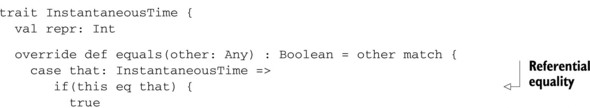</p>
      <p class="center1">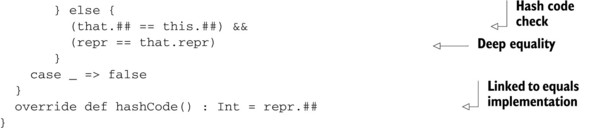</p>
      
      <p class="noind">The class contains only one member, <kbd class="calibre18">repr</kbd>, which is a number representing the seconds since midnight, January 1, 1970 Greenwich Mean Time. As this is the only data
         value in the class, and it’s immutable, <kbd class="calibre18">equals</kbd> and <kbd class="calibre18">hashCode</kbd> will be based on this value. When implementing an <kbd class="calibre18">equals</kbd> method within the JVM, it’s usually more performant to test referential equality before doing any sort of deep equality check.
         In the case of this class, it’s not necessary. For a sufficiently complex class, it can drastically help performance, but
         this class doesn’t need it. The next piece to a good <kbd class="calibre18">equals</kbd> method is usually using the <kbd class="calibre18">hashCode</kbd> for an early false check. Given a sufficiently sparse and easy to compute <kbd class="calibre18">hashCode</kbd>, this would be a good idea. Once again, in this class it’s not necessary, but in a sufficiently complex class, this can be
         performant.
      </p>
      <p class="calibre2"> </p><table cellspacing="5" width="100%" border="1" class="calibre10"><colgroup class="calibre19"><col width="550" class="calibre12"/></colgroup><tbody class="calibre13"><tr class="calibre14"><td class="calibre20"/>
            </tr></tbody></table><h5 class="notetitle" id="ch02note05">## and == VS. Equals and Hashcode</h5>
      
      
      <p class="noindclose">In Scala, the <kbd class="calibre18">##</kbd> method is equivalent to the <kbd class="calibre18">hashCode</kbd> method in Java as the <kbd class="calibre18">==</kbd> method is equivalent to the <kbd class="calibre18">equals</kbd> method in Java. In Scala, when <i class="calibre9">calling</i> the <kbd class="calibre18">equals</kbd> or <kbd class="calibre18">hashCode</kbd> method it’s better to use <kbd class="calibre18">##</kbd> and <kbd class="calibre18">==</kbd>. These methods provide additional support for value types. But the <kbd class="calibre18">equals</kbd> and <kbd class="calibre18">hashCode</kbd> method are used when <i class="calibre9">overriding</i> the behavior. This split provides better runtime consistency and still retains Java interoperability.
      </p>
      
      <table cellspacing="5" width="100%" border="1" class="calibre10"><colgroup class="calibre19"><col width="550" class="calibre12"/></colgroup><tbody class="calibre13"><tr class="calibre14"><td class="calibre20"/>
            </tr></tbody></table><p class="calibre2"> </p><p class="noind">This class helps us illustrate two principles: the importance of a good equality method and always challenge the assumptions
         of your code. In this case, the “best practice” equality method, while great for a sufficiently complex class, provides little
         benefit for this simple class.
      </p>
      <p class="calibre2"> </p><table cellspacing="5" width="100%" border="1" class="calibre10"><colgroup class="calibre19"><col width="550" class="calibre12"/></colgroup><tbody class="calibre13"><tr class="calibre14"><td class="calibre20"/>
            </tr></tbody></table><h5 class="notetitle" id="ch02note06">Note</h5>
      
      
      
      <p class="noindclose"><a id="iddle1296" class="calibre25"></a><a id="iddle1776" class="calibre25"></a><a id="iddle1778" class="calibre25"></a><a id="iddle1831" class="calibre25"></a><a id="iddle2028" class="calibre25"></a>When implementing equality for your own classes, test the assumptions in the standard equality implementation to make sure
         they hold true.
      </p>
      
      <table cellspacing="5" width="100%" border="1" class="calibre10"><colgroup class="calibre19"><col width="550" class="calibre12"/></colgroup><tbody class="calibre13"><tr class="calibre14"><td class="calibre20"/>
            </tr></tbody></table><p class="calibre2"> </p><p class="noind">Our implementation of equals suffers from yet another flaw, that of polymorphism.</p>
      
      
      
      <h4 id="ch02lev2sec10" class="calibre28">2.5.2. <a id="ch02lev2sec10__title" class="calibre25"></a>Polymorphic equals implementation
      </h4>
      
      <p class="noind">In general, it’s best to avoid polymorphism with types requiring deep equality. Scala no longer supports subclassing case
         classes for this very reason. But there are still times in code where this is useful or even necessary. To do so, we need
         to ensure that we’ve implemented our equality comparisons correctly, keeping polymorphism in mind and utilizing it in our
         solution.
      </p>
      
      <p class="noind">Let’s create a subclass of <kbd class="calibre18">InstantaneousTime</kbd> that also stores labels. This is the class we’ll use to save events in our timeline, so we’ll call it <kbd class="calibre18">Event</kbd>. We’ll make the assumption that events on the same day will hash into the same bucket, and hence have the same <kbd class="calibre18">hashCode</kbd>, but equality will also include the name of the event. Let’s take a crack at an implementation in the following listing.
      </p>
      
      
      
      <h5 class="notetitle" id="ch02list23">Listing 2.23. <a id="ch02list23__title" class="calibre25"></a>Event subclass of <kbd class="calibre18">InstantaneousTime</kbd></h5>
      
      <p class="center1">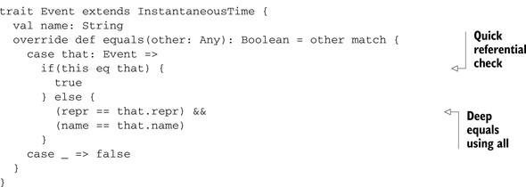</p>
      
      
      <p class="noind">We’ve dropped the <kbd class="calibre18">hashCode</kbd> early exit in our code, as checking the <kbd class="calibre18">repr</kbd> member is just as performant in our particular class. The other thing you’ll notice is that we’ve changed the pattern match
         so that only two <kbd class="calibre18">Event</kbd> objects can be equal to each other. Let’s try to use this in the REPL in the following listing.
      </p>
      
      <h5 class="notetitle" id="ch02list24">Listing 2.24. <a id="ch02list24__title" class="calibre25"></a>Using Event and <kbd class="calibre18">InstantaneousTime</kbd></h5>
      <p class="center1">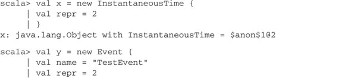</p>
      <p class="center1">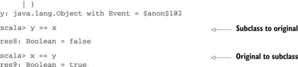</p>
      
      
      <p class="noind"></p><p class="calibre2"> </p><table cellspacing="5" width="100%" border="1" class="calibre10"><colgroup class="calibre19"><col width="550" class="calibre12"/></colgroup><tbody class="calibre13"><tr class="calibre14"><td class="calibre20"/>
            </tr></tbody></table><div class="calibre4">
         
         <b id="ch02sb06" class="calibre21">Use scala.Equals for polymorphic equality</b>
         
         <p class="noind"><a id="iddle1140" class="calibre25"></a>Polymorphic equality is easy to mess up. scala.Equals provides a template to make it easier to avoid mistakes.
         </p>
         
      </div>
      <table cellspacing="5" width="100%" border="1" class="calibre10"><colgroup class="calibre19"><col width="550" class="calibre12"/></colgroup><tbody class="calibre13"><tr class="calibre14"><td class="calibre20"/>
            </tr></tbody></table><p class="calibre2"> </p><p class="noind">What’s happened? The old class is using the old implementation of the equality method, and therefore doesn’t check for the
         new name field. We need to modify our original equality method in the base class to account for the fact that subclasses may
         wish to modify the meaning of equality. In Scala, there’s a <kbd class="calibre18">scala.Equals</kbd> trait that can help us fix this issue. The <kbd class="calibre18">Equals</kbd> trait defines a <kbd class="calibre18">canEqual</kbd> method that’s used in tandem with the standard <kbd class="calibre18">equals</kbd> method. The <kbd class="calibre18">canEqual</kbd> method allows subclasses to opt out of their parent classes’ equality implementation. This is done by allowing the <kbd class="calibre18">other</kbd> parameter in the <kbd class="calibre18">equals</kbd> method an opportunity to cause an equality failure. To do so, we override <kbd class="calibre18">canEqual</kbd> in our subclass with whatever rejection criteria our overridden <kbd class="calibre18">equals</kbd> method has. Let’s modify our classes to account for polymorphism using these two methods in the following listing.
      </p>
      
      <h5 class="notetitle" id="ch02list25">Listing 2.25. <a id="ch02list25__title" class="calibre25"></a>Using <kbd class="calibre18">scala.Equals</kbd></h5>
      <p class="center1">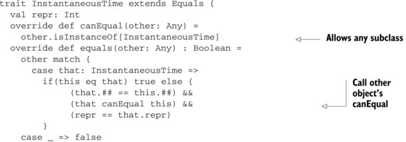</p>
      <p class="center1">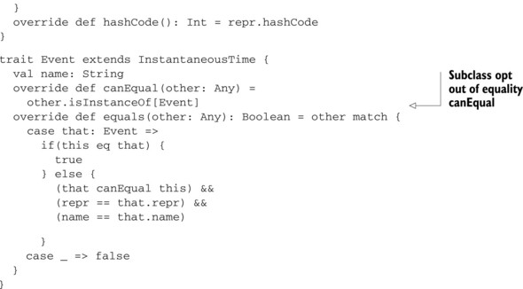</p>
      
      <p class="noind"><a id="iddle1294" class="calibre25"></a>The first thing to do is implement <kbd class="calibre18">canEqual</kbd> on <kbd class="calibre18">InstantaneousTime</kbd> to return <kbd class="calibre18">true</kbd> if the other object is also an <kbd class="calibre18">InstantaneousTime</kbd>. Next let’s account for the other object’s <kbd class="calibre18">canEqual</kbd> result in the equality implementation. Finally, an overridden <kbd class="calibre18">canEqual</kbd> in the <kbd class="calibre18">Event</kbd> class will only allow equality with other <kbd class="calibre18">Event</kbd>s.
      </p>
      <p class="calibre2"> </p><table cellspacing="5" width="100%" border="1" class="calibre10"><colgroup class="calibre19"><col width="550" class="calibre12"/></colgroup><tbody class="calibre13"><tr class="calibre14"><td class="calibre20"/>
            </tr></tbody></table><h5 class="notetitle" id="ch02note07">When Overriding Equality of a Parent Class, Also Overrides Canequal</h5>
      
      
      <p class="noindclose">The <kbd class="calibre18">canEqual</kbd> method is a lever, allowing subclasses to opt out of their parent class’s equality implementation. This allows a subclass
         to do so without the usual dangers associated with a parent class <kbd class="calibre18">equals</kbd> method returning <kbd class="calibre18">true</kbd> while a subclass would return <kbd class="calibre18">false</kbd> for the same two objects.
      </p>
      
      <table cellspacing="5" width="100%" border="1" class="calibre10"><colgroup class="calibre19"><col width="550" class="calibre12"/></colgroup><tbody class="calibre13"><tr class="calibre14"><td class="calibre20"/>
            </tr></tbody></table><p class="calibre2"> </p><p class="noind">Let’s look at our earlier REPL session and see if the new <kbd class="calibre18">equals</kbd> methods behave better, as in the following listing.
      </p>
      
      <h5 class="notetitle" id="ch02list26">Listing 2.26. <a id="ch02list26__title" class="calibre25"></a>Using new <kbd class="calibre18">equals</kbd> and <kbd class="calibre18">canEquals</kbd> methods
      </h5>
      <p class="center1">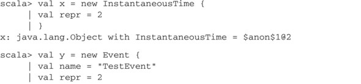</p>
      <p class="center1">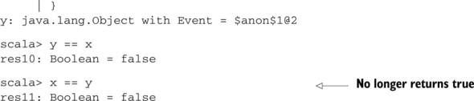</p>
      
      <p class="noind">We’ve succeeded in defining an appropriate equality method. We can now write a general <kbd class="calibre18">equals</kbd> method that performs well with general assumptions about our programs, and we can handle the case where our classes are also
         polymorphic.
      </p>
      
      
      
      
      <h3 id="ch02lev1sec6" class="calibre17"><a id="ch02lev1sec6__title" class="calibre6"></a>2.6. Summary
      </h3>
      
      <p class="noind">In this chapter, we looked at the first crucial items for using Scala. Leveraging the REPL to do rapid prototyping is crucial
         to any successful Scala developer. Favoring expression-oriented programming and immutability helps simplify a program and
         improve the ability to reason through code. <kbd class="calibre18">Option</kbd> can also help improve reasonability of the code by clearly delineating where uninitialized values are accepted. Also, writing
         a good equality method in the presence of polymorphism can be difficult. All of these practices can help make the first steps
         in Scala successful. For continued success, let’s look at code style and how to avoid running into issues with Scala’s parser.
      </p>
      
      
      
      
      <div class="calibre4" id="calibre_pb_10"></div></div>

{% endraw %}

